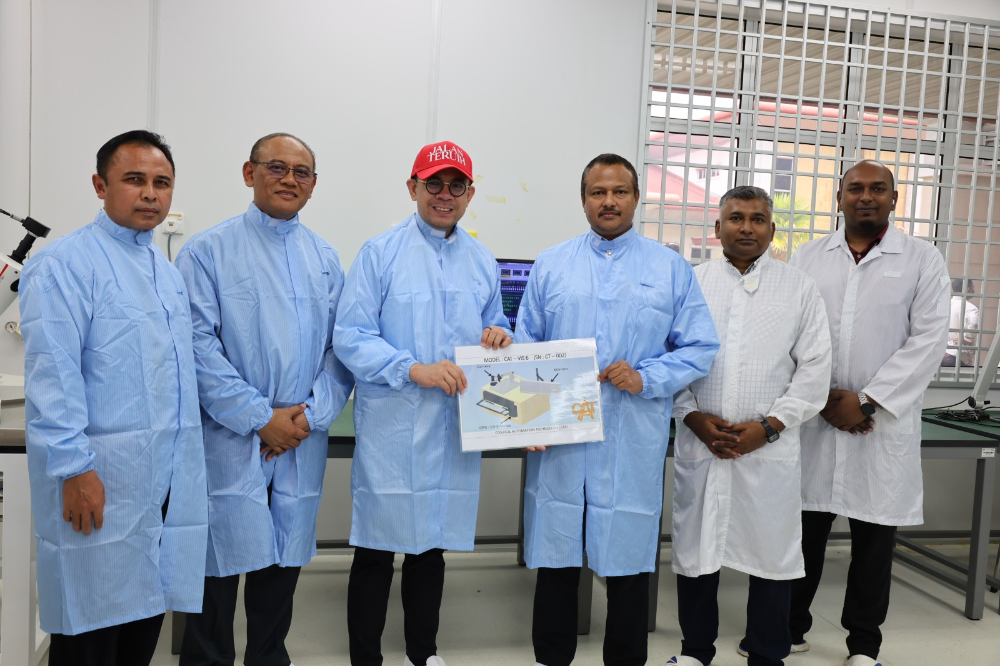

Boosting Skills: CATSB Donates Vision System to ADTEC for Semiconductor Training
Published on September 19, 2025
CATSB has donated an advanced Keyence Vision System, comprising one CV-X300F Vision Controller and one CA-035M Camera, to ADTEC as part of its commitment to supporting education and skills development in the semiconductor industry.
The donated system will be used to train students in semiconductor component inspections, giving them the opportunity to gain practical experience with tools commonly used in the industry. By incorporating this system into ADTEC’s training modules, students will develop a deeper understanding of quality control, defect detection, and precision inspection processes.
According to ADTEC representatives, the contribution from CATSB will strengthen the institution’s ability to nurture industry-ready graduates who are prepared to take on roles in semiconductor manufacturing and related fields.
CATSB expressed that the donation reflects its long-term vision of building strong collaborations with training institutions to ensure a sustainable pipeline of skilled talent for the growing semiconductor sector.
This partnership highlights the importance of industry-academia collaboration in advancing Malaysia’s position in the global semiconductor value chain.
Back to News